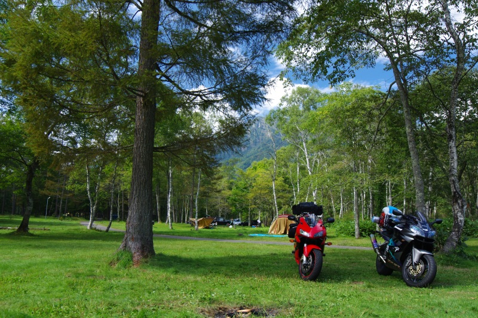

寺本 晃大
プロフィール
|
|
学年： 部活･サークル： 趣味： 出身高専： 実務訓練先： |
修士2年 二輪部,しゅがく部 ツーリング、バイク整備、スキー 松江工業高等専門学校 東洋電機製造株式会社 |
研究内容
| 研究テーマ |
付随車ダイナミクスを考慮した電車の空転・滑走再粘着制御の高性能化に関する研究 |
| 原著論文 |
|
| 国際会議 |
[1]K.Teramoto，K.Ohishi，S.Makishima，K.Uezono，S.Yasukawa: "Cooperative Control of Regenerative Brake and Mechanical Brake for a Two Coach Train" the 38th Annual Conference of the IEEE Industrial Electronics Society(2012.10) |
| 国内学会 |
[1]K.Teramoto，K.Ohishi，S.Makishima，K.Uezono，S.Yasukawa: "Observer based Anti-skid Re-adhesion Control considering Regenerative Braking and Air Braking" IEEE Shin-etsu Section (2011.10) [2]寺本晃大，大石潔，牧島信吾，上園恵一，保川忍: 「電車列車の空転再粘着制御時における編成内計画トルク配分制御の一考察」 電気学会 交通・電気鉄道／ITS合同研究会 (2011.11) [3]佐藤正健，寺本晃大，大石潔，牧島信吾，上園恵一，保川忍: 「空転再粘着制御におけるトルク引き下げ量計算法の一検討」 鉄道技術連合シンポジウム J-RAIL2011 (2011.12) [4]寺本晃大，大石潔，牧島信吾，上園恵一，保川忍: 「編成電車における電空協調ブレーキの一考察」 電気学会 産業計測制御研究会 (2012.3) [5]寺本晃大，大石潔，牧島信吾，上園恵一，保川忍: 「すべり加速度に基づいた空転再粘着制御の一検討」 電気学会 産業応用部門大会 (2012.8) [6]丹保辰太郎，寺本晃大，大石潔，牧島信吾, 上園恵一: 「等価実験システムを用いた鉄道車両の空転・滑走再粘着制御」 第22回電気学会東京支部新潟支所研究発表会(2012.11) [7]寺本晃大，大石潔，牧島信吾, 上園恵一，保川忍: 「推定粘着係数に基づいた電空協調ブレーキの一検討」 電気学会 交通・電気鉄道／ITS合同研究会 (2012.11) [8]寺本晃大，大石潔，牧島信吾, 上園恵一，保川忍: 「すべり加速度に基づいた再粘着制御」 鉄道技術連合シンポジウム J-RAIL2012 (2012.12) |
何か一言
電車に関する研究をしてるのに高専4年まで電車に乗ったことがありませんでした。島根の小さな漁村で育ったので、アウトドアが大好きです。
研究の合間にいろいろ出かけたりします。研究の合間です。大切なことなので2回言っておきました。
